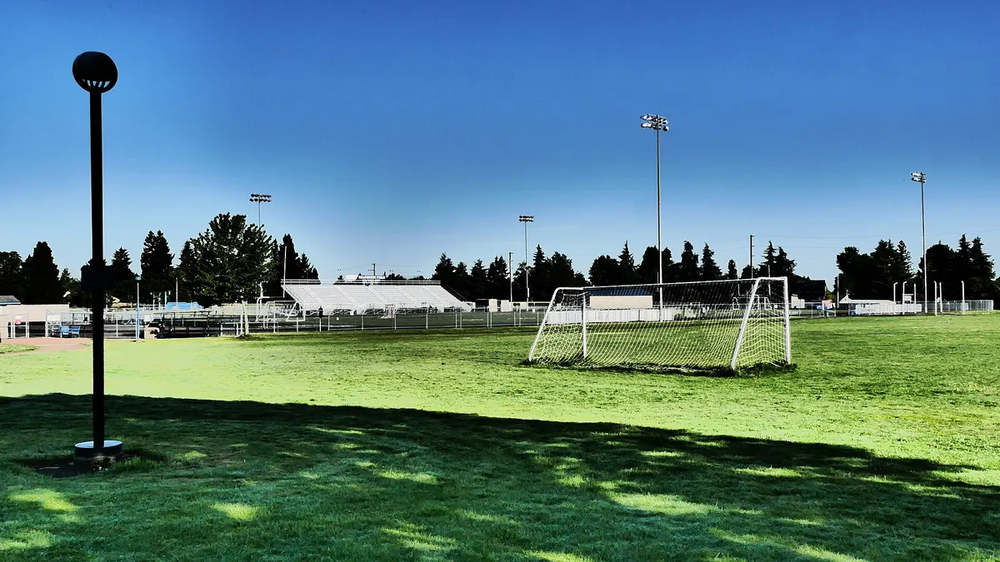
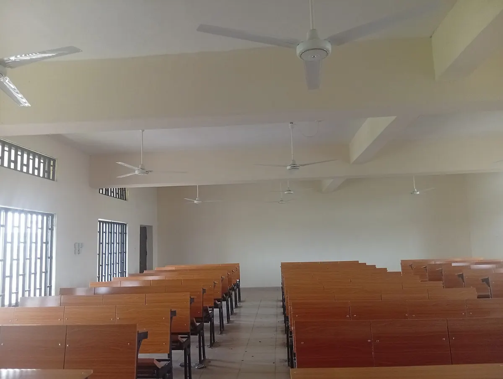

Théâtre
Improviser, apprendre à parler en public et monter un spectacle de fin d’année.
Mercredi 14 h · dès le CE1Après la classe, il se passe beaucoup de choses aux Palmiers : des activités, un vrai repas, un terrain de sport et un transport organisé.
Improviser, apprendre à parler en public et monter un spectacle de fin d’année.
Mercredi 14 h · dès le CE1Entraînements et tournois entre écoles, dans le respect de l’équipe et de l’arbitre.
Mercredi 15 h · dès le CE2Construire et programmer de petits robots pour comprendre la logique.
Jeudi 16 h · dès le CM1Chant, percussions et flûte : une chorale qui se produit à chaque fête de l’école.
Mardi 16 h · dès la maternelleConversation, jeux et lecture pour prendre confiance à l’oral.
Lundi 16 h · dès le CP1Stratégie, patience et concentration, avec des mini-tournois internes.
Vendredi 16 h · dès le CE2Éducation physique chaque semaine, tournois entre classes et entraînements de football le mercredi. Les enfants apprennent à jouer ensemble et à gagner comme à perdre.
Photo : Rick Obst, CC BY 2.0, via Wikimedia Commons (terrain illustratif).


Cantine : repas équilibrés préparés chaque jour (riz, attiéké, légumes, poisson ou poulet, fruits de saison). Les allergies sont notées à l’inscription.
Transport : ramassage en minibus depuis Cocody, Riviera, Marcory, Plateau et Yopougon, avec une accompagnatrice à bord. Premier passage vers 6 h 45.
Les tarifs de cantine et de transport sont dans le simulateur de frais.
Filtrez par cycle pour voir les dates qui vous concernent. Dates indicatives (démonstration).
10 dates affichées